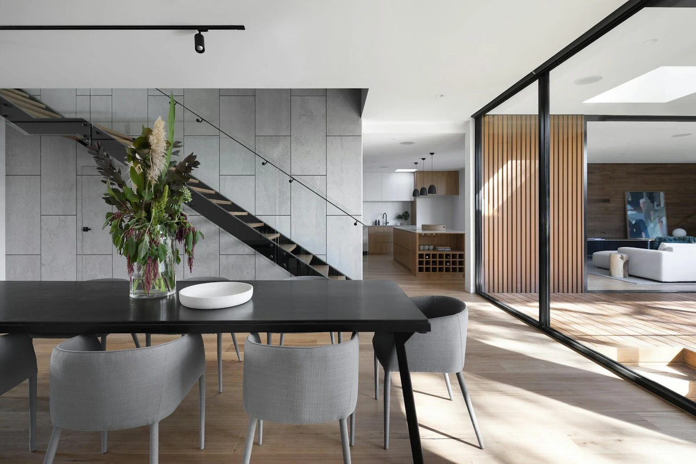

Observatory / Cape Town
Property
development
& renovation.
Property development and renovations from an office on Lower Main Road, Observatory.

Explore our expertise
Property developmentExplore Property renovationsExplore
Project enquiries
A starting point for your project.
Bring the suburb, what you want to build or change, and any plans or photos you already have.
Prepare a project briefArchitecture & materials
Ideas for your property.
Cape Town office
On Lower Main Road.
104 Lower Main Road
Observatory, Cape Town, 7925Get directions
Observatory, Cape Town, 7925Get directions